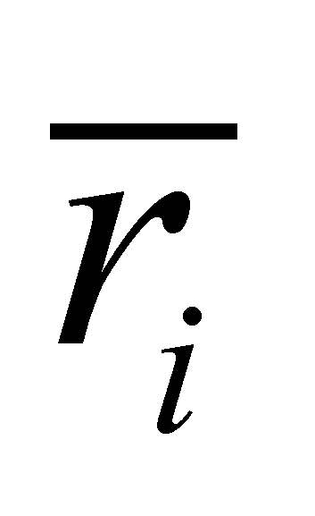

|
|
|
In the previous section, we have asserted that the essence of the objectual approach consists in the organization of the information about a specific phenomenon in objects and processes. In case of the distribution 5.2.2.2.1 or 5.2.2.2.2, the existence criteria of an object (established in chapter 3) are:
P1 the set of assigned attributes contains a single attribute M.
P2 the support attribute of the distribution is the spatial position ;
P3 the distribution type is provided by the relations 5.2.2.2.1 or 5.2.2.2.2, specific to a certain type of spatial distribution;
P4 the amount of the support domain is the volume V (divided into the finite set of the quanta or of the volume elements) in which amount M is distributed;
P5 the inner reference system of the complex object - spatial distribution of the amount M;
P6 tk moment (a temporal DP) of the simultaneous existence of all the model properties P1…P5.
The properties P1…P4 have been explicitly settled by means of the initial data, which were the same, both for the virtual flux model and for the systemic one. However, the criterion P5 is specific for the objectual approach, therefore, it will be minutely analyzed.
In chapter 3, we have seen what does the object mean, what does the complex object mean and most of all, that the abstract object which is the inner reference of the objects with spatial support has two components: T reference and R reference. We have also noticed that the motion of an object is represented by the motion of its inner reference system against an outer reference. Hence, two types of specific motions have resulted and they are directly related to the element of the inner reference system whose quantitative attribute changes during the motion. If the position of the inner T reference is the only one who changes, we are dealing with a specific translation (displacement) process, and if only the position of the inner R reference is variable, we are dealing with a specific rotation process. As for the motions deployed in a 3D Euclidean space (Cartesian coordinates), each of these two motion types has three components, specific to each axis: Tx, Ty, Tz, respectively Rx, Ry, Rz.
We have also seen in chapter 3 that a complex object has an inner RS, which is however external to all the elements from which the object is made-up. As compared to this common RS, the inner reference systems of the constitutive objects can be involved in three types of relations:
S-type relations - If the relations between the inner T and R references of the constitutive objects are invariant during the motion, both between the neighbouring objects and against the homologue common T and R reference, the entire distribution of the amount M shall move just as a solid (rigid) body. In this case, there is a global (common) T and R reference of the distribution 5.2.2.2.1 or 5.2.2.2.2, with their positions defined against an outer RS, against which the overall motion of the spatial distribution of amount M would be determined. One may notice that within S-type relations, the inner motions of the complex object’s elements, either T or R are forbidden.
L-type relations - If only the relations between the inner T references of the neighbouring elements are maintained invariant (the elements remain adjacent, permanently in contact during the motion but they are able to rotate freely), the entire distribution shall be moving just as a finite liquid portion which preserve its volume but it is not able to preserve its shape (inner distribution of the elements’spatial position). .
Comment 5.2.2.3.1: The volume preservation is made just because the inner spatial domains of the constitutive objects remain permanently adjacent. In this way, if the number of elements is constant, even the sum of the domains amount (total volume) will also remain constant.
In this case, there is only one common T reference (the mass-center for a liquid portion) whose motion against an outer T reference is the overall motion of the complex object. As regards L-type of relations, both the inner translations and rotations are allowed, either on the element level or on the group of elements (cluster), but these motions are interrelated.
Comment 5.2.2.3.2: The translation motions of the elements which are in permanent contact are the same with the translation motion of the center of a spherical body which rolls without sliding on a surface. In this case, the shifting motion of the inner T reference of the body is exclusively generated by its rotation (rolling), otherwise speaking, if there is no rotation, there is no shifting, and other way round, any shifting must compulsorily come with a rotation.
G-type relations - If there is no invariant relation between the inner T and R references of the components and the common T and R reference of the distribution, those particular elements do not make-up a compound object any longer, each of these elements moving freely, just as the molecules of a gas. In case of G-type relations, any kind of inner motion is allowed and there is no interrelation between the T and R motions.
The flux model is different for each of the above-mentioned cases, but they all have in common the fact that we are dealing with a distributed motion, first spatially and then temporally, that is a spatial-temporal motion distribution.
Copyright © 2006-2011 Aurel Rusu. All rights reserved.